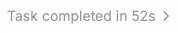

<section class="slide pitch" id="s5" aria-labelledby="h5">
  <h2 id="h5">QwenWork recorded an automatic release check.</h2>
  <div class="scene run-scene arrival">
    <div class="win desktop-proof">
      <div class="chrome">
        <span class="traffic" aria-hidden="true"><i></i><i></i><i></i></span>
        <span class="chrome-title">QwenWork Desktop</span>
      </div>
      <figure>
        <figcaption>Separate handshake task</figcaption>
        
      </figure>
    </div>
    <div class="win watch-proof">
      <div class="chrome"><strong>Automatic watch log</strong></div>
      <dl class="watch-timing">
        <div style="--tick:0"><dt>Scheduled slot</dt><dd><time datetime="2026-11-21T23:15:00+08:00">21 Nov 2026 · 23:15 SGT</time></dd></div>
        <div style="--tick:1"><dt>Actual start</dt><dd><time datetime="2026-11-21T23:16:37+08:00">23:16:37 SGT</time></dd></div>
      </dl>
      <div class="watch-summary">
        <strong>8 official series checked</strong>
        <span>Result · no new revisions</span>
      </div>
    </div>
  </div>
  <aside class="notes">The November 21 watch was due at 23:15 and started at 23:16:37 Singapore time. It checked eight official series and found no new revisions.</aside>
</section>
